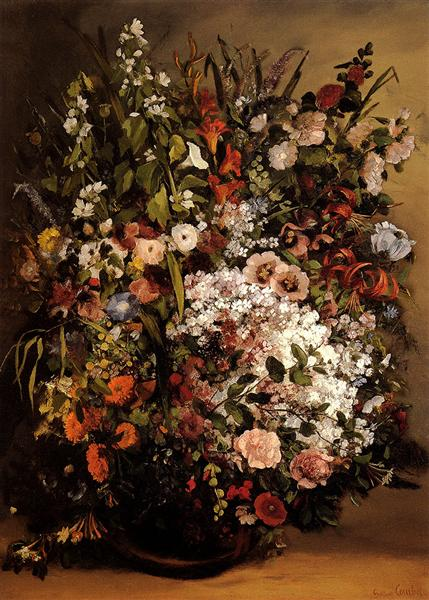
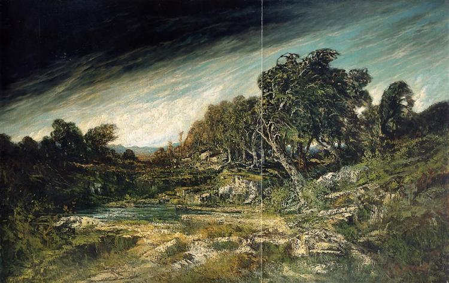

Gustave Courbet (1819–1877) was a French painter and a leading figure in the Realist movement of the 19th century.
Born in Ornans, France, Courbet rejected the idealized styles of Romanticism and instead sought to depict the world as it truly was.
His paintings often portrayed ordinary people and rural life with unflinching honesty, challenging traditional artistic conventions of beauty and subject matter.
Works like The Stone Breakers (1849) and A Burial at Ornans (1849–1850) exemplify his commitment to realism and social commentary.
Courbet’s bold style and outspoken political views made him both influential and controversial.
During the 1871 Paris Commune, he became involved in revolutionary politics, which later led to his imprisonment and exile in Switzerland.
Despite his turbulent later years, Courbet’s legacy endures as a pioneer who paved the way for modern art by emphasizing truth, individuality,
and the artist’s freedom to represent reality without idealization.
Popular Works
Bather Sleeping by a Brook

Bouquet of Flowers (1862)

The Approaching Storm

The Desperate Man
Primary Mediums
- Oil Paint
- Canvas
- Palette knife
- Charcoal and graphite
- Occasional lithography